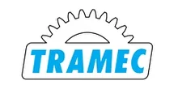

Поставляем оригинальные редукторы и мотор-редукторы Tramec под заказ — оригинал с гарантией производителя. Нужно дешевле — изготовим аналог собственного производства по присоединительным размерам. Цена и срок поставки — по запросу.
Оригинальные редукторы и мотор-редукторы Tramec — под заказ, с гарантией производителя. Пришлите модель или шильд — сообщим цену и срок поставки. Нужно дешевле — изготовим аналог (см. ниже).
| Серия Tramec | Назначение |
|---|---|
| R / V | червячные редукторы |
| A | соосно-цилиндрические |
| K | коническо-цилиндрические |
| XA / XC | плоские цилиндрические |
| Вариаторы | механические |
Точные типоразмеры — по каталогу производителя. Цена и наличие оригинала — по запросу. Не оферта.
Заменяем червячные мотор-редукторы Tramec на аналоги собственного производства (серии Ч, 2Ч, МЧ, МЧ2). Узел встаёт на штатное место по присоединительным и габаритным размерам — переходные фланцы и спецвалы изготавливаем по вашим чертежам.

| Заменяем серии Tramec | К, XC, PA, PC |
|---|---|
| Мощность двигателя | 0.06–90 кВт |
| Передаточное число | 3.77–674 |
| Наш аналог | Редукторы серии ZR (червячные, плоские цилиндрические, конические) |
| Гарантия | 24 месяца |
| Срок | Отгрузка со склада от 3 дней, изготовление от 5 рабочих дней |
Совпадают присоединительные размеры, валы и фланцы — узел встаёт на штатное место.
Вдвое выше среднерыночной.
Отгрузка со склада от 3 дней — не ждать импорт месяцами.
Пришлите фото шильда или модель — подберём аналог за 15 минут.
Подбор по типоразмеру: каждой модели Tramec соответствует наш редуктор серии ZR. Точную замену по вашей модели или шильду подтвердит инженер — пришлите шильд или опишите задачу.
| Модель Tramec | Наш аналог |
|---|---|
| Червячные мотор-редукторы | |
| К 30 | ZR 603 |
| К 40 | ZR 604 |
| К 50 | ZR 605 |
| К 63 | ZR 606 |
| К 75 | ZR 607 |
| К 90 | ZR 609 |
| К 110 | ZR 6010 |
| XC 30 | ZR 603 |
| XC 40 | ZR 604 |
| XC 50 | ZR 605 |
| XC 63 | ZR 606 |
| XC 75 | ZR 607 |
| XC 90 | ZR 609 |
| XC 110 | ZR 6010 |
| XC 130 | ZR 6013 |
| Плоские цилиндрические мотор-редукторы | |
| PA, PC 63 | ZR 636 |
| PA, PC 80 | ZR 646 |
| PA, PC 100 | ZR 656, ZR 666 |
| PA, PC 125 | ZR 676 |
| PA, PC 160 | ZR 686, ZR 696 |
| Конические мотор-редукторы | |
| 71B, 80C | ZR 838 |
| 90В, 80С | ZR 848 |
| 112В, 100С | ZR 858, ZR 868 |
| 140В, 125С | ZR 878 |
| 180В, 160С | ZR 888, ZR 898 |
| 200В, 180С | ZR 8108 |
| 225В, 200С | ZR 8128 |
Оставьте контакты или пришлите модель/шильд — инженер подберёт аналог, рассчитает присоединительные размеры и пришлёт КП.
Получить КПДа, поставляем оригинальные редукторы и мотор-редукторы Tramec под заказ — с гарантией производителя. Срок поставки оригинала зависит от серии, типоразмера и наличия у производителя, поэтому уточняется индивидуально под вашу модель. Пришлите модель или шильд — сообщим актуальный срок и условия поставки.
Оригинал Tramec поставляется под заказ с гарантией производителя. Аналог — это редуктор серии ZR нашего собственного производства, который встаёт на штатное место по присоединительным и габаритным размерам. Аналог обычно дешевле оригинала и доступен в более короткие сроки (отгрузка со склада от 3 дней), гарантия на наш аналог — 24 месяца. Выбор между оригиналом и аналогом — за вами: подскажем оба варианта.
Пришлите фото шильда или укажите модель Tramec (например, серий К, XC, PA/PC или конических 71B–225В) — инженер подберёт соответствующий редуктор ZR по присоединительным размерам и передаточному числу. Подбор по шильду занимает около 15 минут. Также можно воспользоваться таблицей подбора Tramec → ZR на этой странице.
Цена оригинала и аналога Tramec рассчитывается индивидуально — она зависит от серии, типоразмера, исполнения и объёма. Цена и наличие — по запросу. Пришлите модель или шильд, и мы пришлём коммерческое предложение с вариантами «оригинал под заказ» и «аналог дешевле».
Хотите Tramec купить в России — поможем подобрать и поставить нужный Tramec редуктор. Поставляем оригинальные редукторы и мотор-редукторы Tramec под заказ с гарантией производителя, а если нужно дешевле — изготавливаем аналог Tramec собственного производства (серия ZR) по присоединительным и габаритным размерам. Цена и срок поставки — по запросу, подбор по модели или шильду.
Tramec — итальянский производитель редукторов и мотор-редукторов, в линейке которого представлены червячные редукторы серий R и V, соосно-цилиндрические редукторы серии A, коническо-цилиндрические серии K, плоские цилиндрические серий XA и XC, а также механические вариаторы. Каждая серия рассчитана на свои задачи по моменту, передаточному числу и компоновке привода, поэтому при замене важно сохранить присоединительные размеры, тип вала и монтажное исполнение.
Поставляем оригинальные редукторы Tramec под заказ — с гарантией производителя. Это оптимальный вариант, когда требуется именно заводское изделие конкретной серии и типоразмера. Срок и стоимость поставки оригинала уточняются индивидуально. Подробнее об импортозамещении редукторов и доступных решениях — на отдельной странице.
Если нужно быстрее и дешевле, изготавливаем аналог Tramec собственного производства — редукторы серии ZR. Узел встаёт на штатное место по присоединительным и габаритным размерам, переходные фланцы и спецвалы делаем по вашим чертежам. Чтобы подобрать точную замену, воспользуйтесь подбором редуктора или пришлите шильд — инженер ответит с вариантами оригинала и аналога.
| Серии Tramec | R / V, A, K, XA / XC, вариаторы |
|---|---|
| Поставка | оригинал под заказ + аналог собственного производства |
| Цена | по запросу |
| Подбор | по модели и шильду |